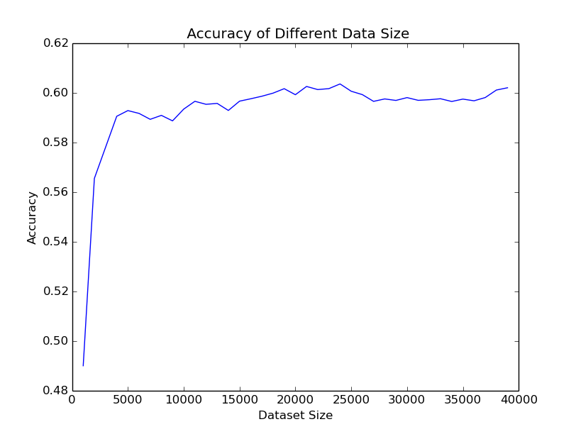

Welcome to Dota2 result predictor
This page shows the EECS349 Machine Learning course project at Northwestern University.
Problem
In our project we want to predict the winner of a Dota2 competition with the hero selections of two teams using machine learning algorithm. Through our project, we want to help players to understand the game better and select better combination of heroes in a team.
Solution
We use logistic regression to predict the outcome of a game. Our feature is which hero is chosen in a team. Because once the heroes are decided, the attributes such as hero types and hero skills are determinate, picked heroes for each team are the most important attribute to predict a game. The result of prediction is also a binary variable. If Radiant wins, the outcome will be 1. If Dire wins, it will be 0.
Test
We use a binary vector X ∈R^220 (initial value=0) as our data set, encoding the presence or absence of a hero in the “Radiant” and the “Dire” teams. For example, if hero no.100 is in Radiant, x_110=1. To train this binary data set, we use simple logistic regression model, using a weighted sum of our feature vector. After training, we implement 10-fold cross validation to get the accuracy of this model. The accuracy of our model is 60.6%, which we think is pretty high for a Dota2 game.
Result
The result of 10-fold cross validation is 60.6%. This result indicates that hero selection is a main factor to win a game. There are other factors that will infect a game but are difficult for us to capture and represent, like the environmental factors and the status of a player.

Team members
Huaipei Lu (hlv624), Weihao Ming (wml431), Jiaping Tian (jtl428), Chen Meng (cmb654)
Contact
Having trouble with dota2 result predictor? Please contact W.Ming@u.northwestern.edu and we’ll help you sort it out.